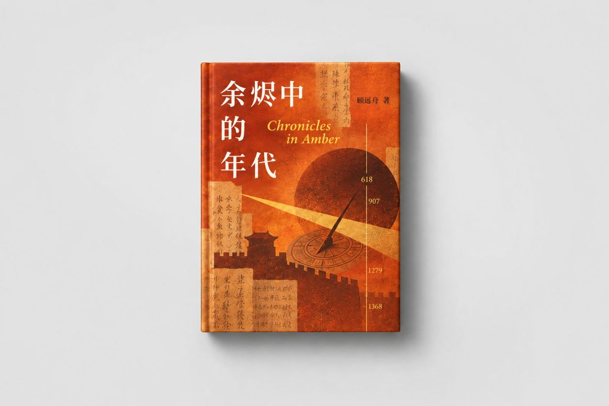
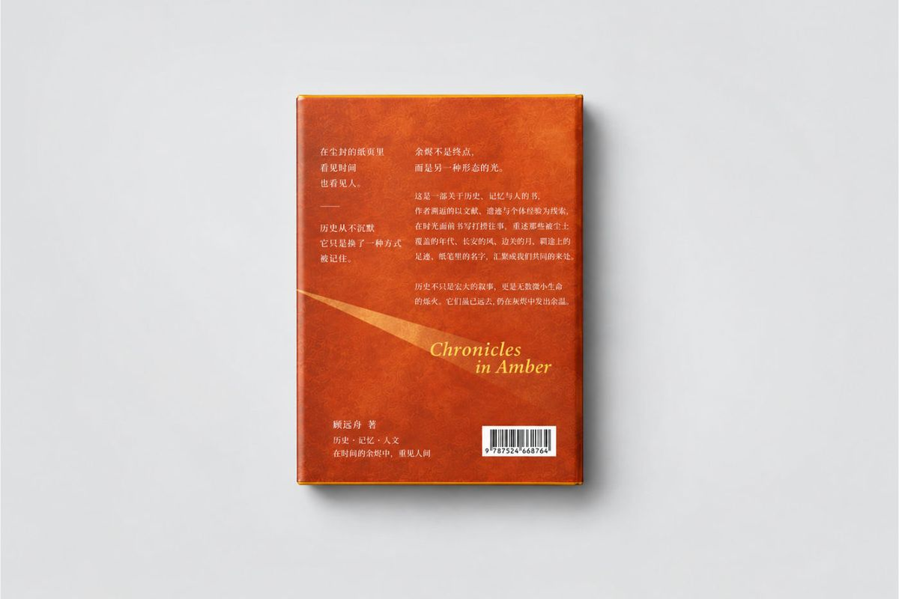
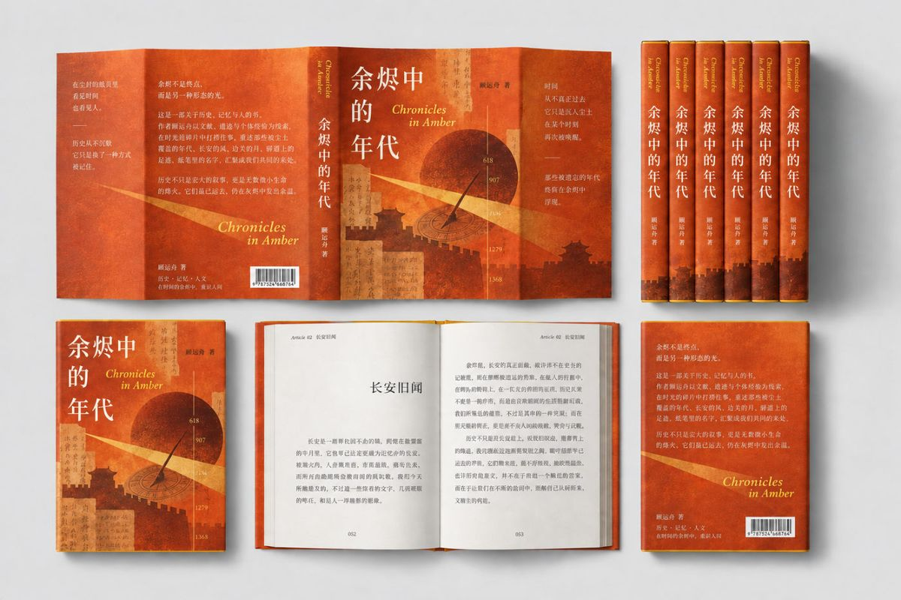
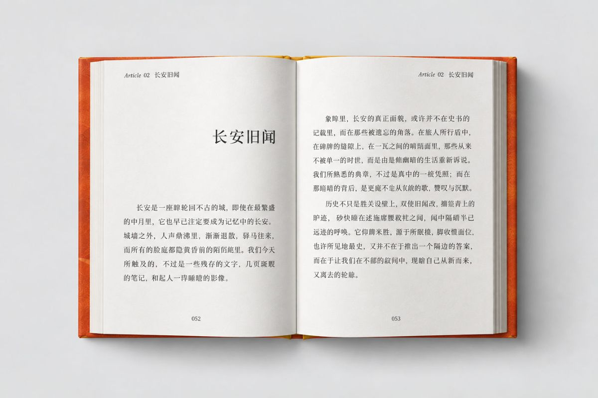
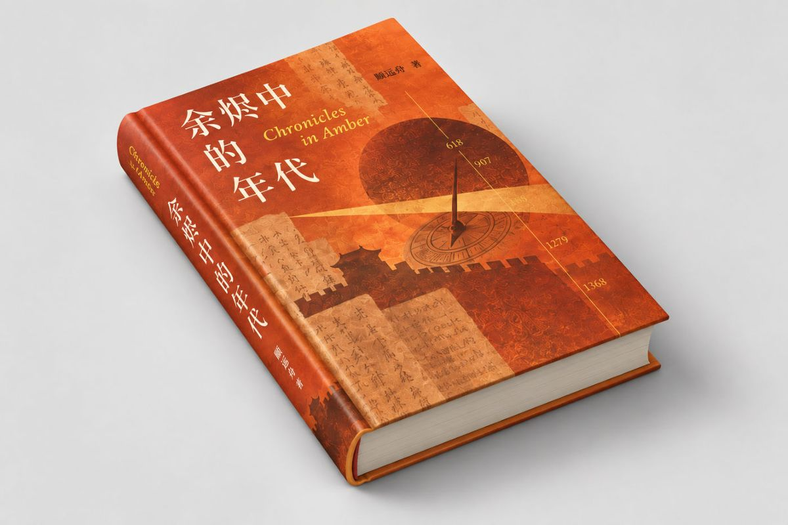
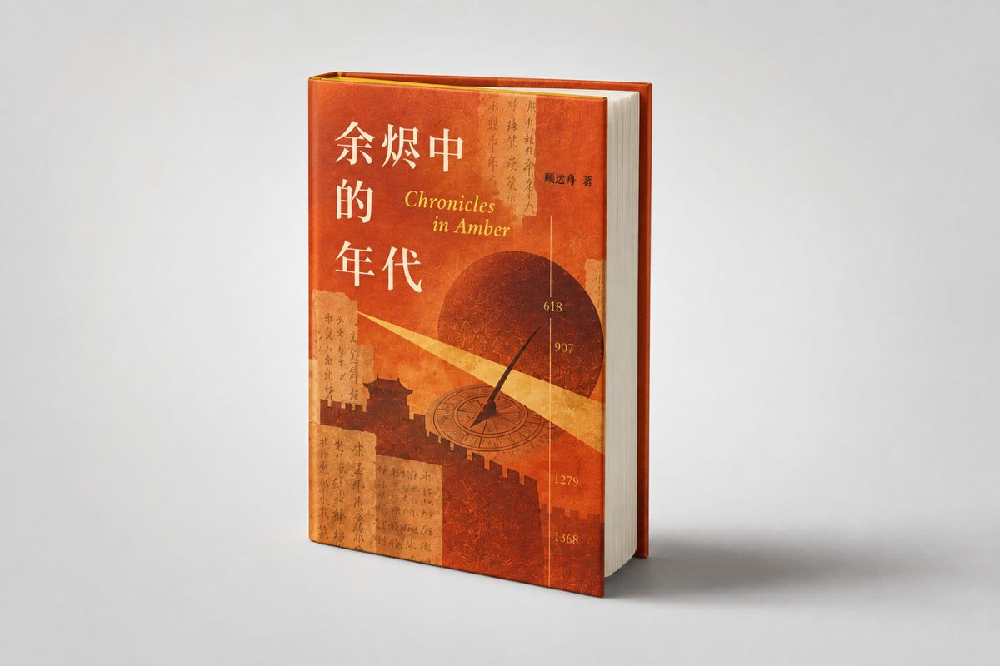
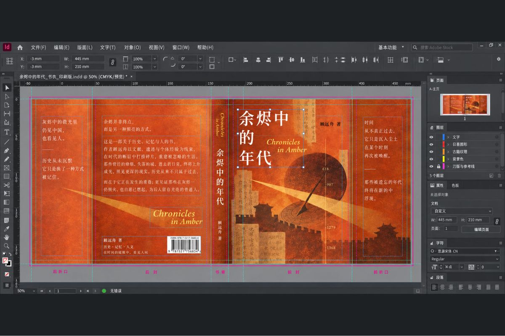

← 返回编辑设计
余烬中的年代 书籍装帧与编辑设计
以「余烬」作为时间与记忆的隐喻，将日晷、城墙、古籍文字和年代刻度重组为具有历史层次的书籍视觉。焦橙与旧纸色贯穿封面、书脊和内页，在厚重叙事氛围与清晰阅读秩序之间建立平衡。
以「余烬」作为时间与记忆的隐喻，将日晷、城墙、古籍文字和年代刻度重组为具有历史层次的书籍视觉。焦橙与旧纸色贯穿封面、书脊和内页，在厚重叙事氛围与清晰阅读秩序之间建立平衡。






